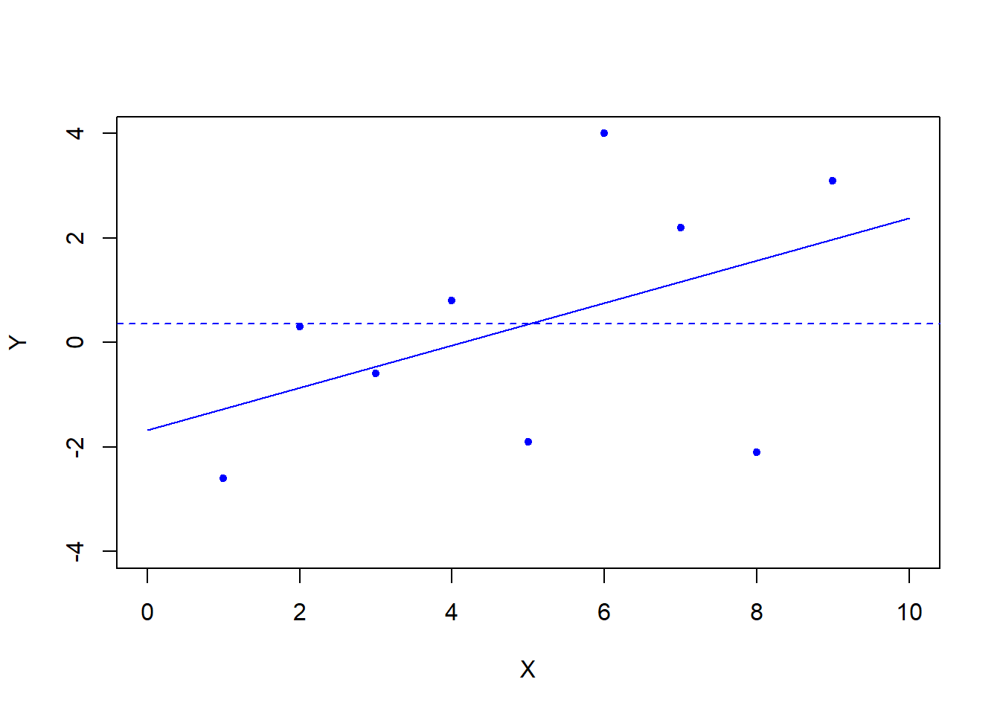

Chapter 22 ANOVA Tables and F Tests
22.1 Introduction
In this section we will focus on the sources of variation in a linear model and how these can be used to determine the most appropriate linear model. We start in Section 22.2 by considering the residuals of the linear model and properties of the residuals. In Section 22.3, we introduce the total sum-of-squares SStot which is a measure of the total amount of variation in the model. This is comprised of two components: the regression sum-of-squares, SSreg, which measures the variability in the observations that is captured by the model and the residual sum-of-squares, SSres, which measures the unexplained variability in the observations. In Section 22.4, we introduce ANOVA tables for summarising variability in the model and testing null hypotheses. In particular, we consider the Fuel Consumption example, introduced in Section 21.2, and show how the conclusions obtained in Section 21.4 can be presented in the form of an ANOVA table. In Section 22.5, we consider two linear models for a given data set, where one model is nested within the other model. This allows us to compare two models which lie between the full model (includes all variables) and the null model (excludes all variables). Finally, in Section 22.6 we extend the comparison of nested models to sequential sum-of-squares to find the most appropriate model out of a range of nested linear models.
22.2 The residuals
Consider the linear modelRecall the following model notation:
- \(E[\mathbf{\epsilon}] = \mathbf{0}\);
- \(\text{Var}(\mathbf{\epsilon}) = \sigma^2\mathbf{I}_n\);
- \(\hat{\mathbf{\beta}} = (\mathbf{Z}^T\mathbf{Z})^{-1} \mathbf{Z}^T\mathbf{y}\) is the LSE of \(\mathbf{\beta}\);
- \(\hat{\mathbf{y}} = \mathbf{Z}\hat{\mathbf{\beta}}\) is the \(n \times 1\) vector of fitted values;
- \(\hat{\mathbf{y}} = \mathbf{P}\mathbf{y}\), where \(\mathbf{P} = \mathbf{Z}(\mathbf{Z}^T\mathbf{Z})^{-1} \mathbf{Z}^T\).
where \(\mathbf{I}_n - \mathbf{P}\) is symmetric, idempotent and has trace \((\mathbf{I}_n - \mathbf{P}) = \text{rank}(\mathbf{I}_n-\mathbf{P})\mathbf{y} = n-p\). Note that \(\text{rank}(\mathbf{I}_n-\mathbf{P})\mathbf{y} = n-p\) denotes the degrees of freedom of the residuals and is equal to the number of observations, \(n\), minus the number of coefficients (parameters), \(p\).
The vector of fitted values is orthogonal to the vector of residuals, that is
\[\hat{\mathbf{y}}^T \hat{\mathbf{\epsilon}} = \hat{\mathbf{\epsilon}}^T \hat{\mathbf{y}} = 0.\]
Details of the proof can be omitted.
Proof of Theorem 22.2.1.
using that \(\mathbf{P}\) is orthogonal (\(\mathbf{P}^T = \mathbf{P}\)) and idempotent (\(\mathbf{P}^2 =\mathbf{P}\)).
The normal linear model assumes \(\mathbf{\epsilon} \sim N(\mathbf{0}, \sigma^2 \mathbf{I}_n)\). We would expect the sample residuals, \(\hat{\mathbf{\epsilon}}\) to exhibit many of the properties of the error terms. The properties of \(\hat{\mathbf{\epsilon}}\) can be explored via graphical methods as in Section 16.6 and Lab 9: Linear Models.
22.3 Sums of squares
Let \(y_i\) be the \(i^{th}\) observation, \(\hat{y}_i\) be the \(i^{th}\) fitted value and \(\bar{y}\) be the mean of the observed values.

The model deviance is given by
Total sum of squares
Define \(\text{SStot} = \sum\limits_{i=1}^n (y_i - \bar{y})^2\) as the total sum of squares. This is proportional to the total variability in \(y\) since \(\text{SStot} = (n-1) \text{Var}(y)\). It does not depend on the choice of predictor variables in \(\mathbf{Z}\).
Residual sum of squares
Define \(\text{SSres} = \sum\limits_{i=1}^n (y_i - \hat{y}_i)^2\) as the residual sum of squares. This is a measure of the amount of variability in \(y\) the model was unable to explain. This is equivalent to the deviance of the model, that is \(\text{SSres} = D\).
Regression sum of squares
Define \(\text{SSreg} = \sum\limits_{i=1}^n (\hat{y}_i - \bar{y})^2\) as the regression sum of squares. This is the difference between \(\text{SStot}\) and \(\text{SSres}\) and is a measure of the amount of variability in \(y\) the model was able to explain.
The coefficient of determination is
The coefficient of determination measures the proportion of variability explained by the regression. Additionally note that:
- \(0 \leq R^2 \leq 1\);
- \(R^2 = 1 - \frac{\text{SSres}}{\text{SStot}}\);
- \(R^2\) is often used as a measure of how well the regression model fits the data: the larger \(R^2\) is, the better the fit. One needs to be careful in interpreting what “large” is on a case-by-case basis.
The adjusted \(R^2\) is
The adjusted \(R^2\) is often used to compare the fit of models with different numbers of parameters.
Under the null hypothesis model, \(Y_i = \beta_0 + \epsilon_i\) and \(\bar{y} = \hat{y}_i\). In this special case,22.4 Analysis of Variance (ANOVA)
Recall from Section 21.4 that the \(F\) statistic used in the test for the existence of regression is \[F = \frac{(D_0 - D_1)/(p-1)}{D_1/(n-p)},\] where \(D_1\) and \(D_0\) are the model deviances or SSres under the alternative and null hypotheses respectively. We noted above that \(D_0\), the deviance under the null hypothesis is equivalent to SStot under any model.
The mean square regression is the numerator in the \(F\) statistic,
The mean square residual is the denominator in the \(F\) statistic,
Note the mean square residual is an unbiased estimator of \(\sigma^2\). Similarly, the residual standard error, \(\text{RSE} = \sqrt{\text{MSres}}\) is an unbiased estimate of \(\sigma\).
The quantities involved in the calculation of the \(F\) statistic are usually displayed in an ANOVA table:
| Source | Degrees of Freedom | Sum of Squares | Mean Square | F Statistic |
|---|---|---|---|---|
| Regression | \(p-1\) | \(\text{SSreg}\) | \(\text{MSreg} = \dfrac{\text{SSreg}}{p-1}\) | \(F = \dfrac{\text{MSreg}}{\text{MSres}}\) |
| Residual | \(n-p\) | \(\text{SSres}\) | \(\text{MSres} = \dfrac{\text{SSres}}{n-p}\) | |
| Total | \(n-1\) | \(\text{SStot}\) |
Fuel consumption (continued) For the data in Section 21.2, Example 21.2.1 (Fuel Consumption) the model \[\text{fuel} = \beta_0 + \beta_1 \text{dlic} + \beta_2 \text{tax} + \beta_3 \text{inc} + \beta_4 \text{road}\] was fitted to the \(n=51\) observations with residual standard error, \(\text{RSE} = 64.8912\). Summary statistics show \(\text{Var}(\text{fuel}) = 7913.88\). Complete an ANOVA table and compute \(R^2\) for the fitted model.
We have
- Note \(p-1=4\), \(n-p=46\) and \(n-1=50\);
- \(\text{SStot} = (n-1)\text{Var}(\text{fuel}) = 50 \times 7913.88 = 395694\);
- \(\text{MSres} = \text{RSE}^2 = 64.8912^2 = 4210.87\);
- \(\text{SSres} = (n-p)\text{MSres} = 46 \times 4210.87 = 193700\);
- \(\text{SSreg} = \text{SStot} - \text{SSres} = 395694-193700 = 201994\);
- \(\text{MSreg} = \text{SSreg}/(p-1) = 201994/4 = 50498.50\);
- \(F = \text{MSreg}/\text{MSres} = 50498.5/4210.87 = 11.99\).
Hence the completed ANOVA table is
| Source | Degrees of Freedom | Sum of Squares | Mean Square | F statistic |
|---|---|---|---|---|
| Regression | \(4\) | \(201994\) | \(50498.50\) | \(11.99\) |
| Residual | \(46\) | \(193700\) | \(4210.87\) | |
| Total | \(50\) | \(395694\) |
We compare the computed \(F\)-statistic, 11.99, with a \(F_{p-1,n-p} =F_{4,46}\) distribution to obtain a \(p\)-value of \(9.331 \times 10^{-7} = P(F_{4,46} >11.99)\). That is, if the null hypothesis (no regression parameters \(\beta_1 = \ldots = \beta_4 =0\)) were true, there is probability \(9.331 \times 10^{-7}\) (just under one in a million) of observing an \(F\)-statistic larger than 11.99.
Finally, \(R^2 = \frac{\text{SSreg}}{\text{SStot}} = \frac{201994}{395694} = 0.5105\).
22.5 Comparing models
Consider two models, \(M_1\) and \(M_2\), where \(M_2\) is a simplification of \(M_1\). For example,The residual sum of squares from model \(M_1\) will always be less then \(M_2\), but we can test the hypotheses: \[ H_0: \beta_1 = \beta_3 = 0 \quad \text{ vs. } \quad H_1: \beta_1 \neq 0 \text{ or } \beta_3 \neq 0 \] at significance level \(\alpha\) to test if removing these terms significantly increases the residual sum of squares.
Let \(D_1 = \sum\limits_{i=1}^n (y_i - \hat{y}_i)^2\) be the model deviance, or SSres, for model \(M_1\).
Let \(D_2 = \sum\limits_{i=1}^n (y_i - \hat{y}_i)^2\) be the model deviance, or SSres, for model \(M_2\).
The decision rule is to reject \(H_0\) if \[ F = \frac{(D_2 - D_1) / q}{D_1 / (n-p)} > F_{q,n-p,\alpha},\] where \(n\) is the number of observations, \(p\) is the number of parameters in \(M_1\) and \(q\) is the number of parameters that are fixed to reduce \(M_1\) to \(M_2\).
For the example above, \(p = 5\) and \(q = 2\).
Watch Video 32 for a work through of comparing models using the \(F\)-distribution. The video uses Example 22.5.1 (Fuel consumption - continued) given below.
Video 32: Model comparison.
Fuel consumption (continued)
Let Model 1 be
\[ \text{fuel} = \beta_0 + \beta_1 \text{dlic} + \beta_2 \text{tax} + \beta_3 \text{inc} + \beta_4 \text{road},\]
and let Model 2 be
\[ \text{fuel} = \beta_0 + \beta_1 \text{dlic} + \beta_3 \text{inc}.\]
The residual sum of squares is \(193700\) for Model 1 and \(249264\) for Model 2. Test which model fits the data better.
at \(\alpha = 0.05\). The decision rule is to reject \(H_0\) if
Substituting in the data gives,
Consequently, we will reject \(H_0\). Model 1 fits the data better at \(\alpha = 0.05\).
We note that the \(p\)-value is \(0.0048 = P(F_{2,46} >6.598)\), which gives very strong support in favour of Model 1.
assuming there is a constant in the model.
Our goal is to build a regression model which best describes the response variable. Hence we would like to explain as much of the variance in \(Y\) as possible, yet keep the model as simple as possible. This is known as the Principle of Parsimony. Consequently we want to determine which explanatory variables are worthwhile to include in the final model.
The idea is that explanatory variables should be included in the model if the extra portion of the regression sum of squares, called the extra sum of squares, which arises from their inclusion in the model is relatively large compared to the unexplained variance in the model, residual sum of squares.
Consider a second model \(M_2\) which is a simplification of \(M_1\), specificallyThe extra sum of squares due to the inclusion of the terms \(\beta_k X_k + \cdots + \beta_{p-1} X_{p-1}\) in the model is
The extra sum of squares has \(q=p-k\) degrees of freedom, where \(q\) is the number of explanatory variables added to the reduced model to make the full model.
We can test the hypotheses:
- \(H_0:\) The reduced model, \(M_2\), best describes the data;
- \(H_1:\) The full model, \(M_1\), best describes the data.
Rejecting \(H_0\) implies the full model describes the data better, so we should include the variables \(X_k,\dots,X_{p-1}\) in our model.
The test for the existence of regression is a special case of this type of test, wherethat is, the reduced model is \(Y = \beta_0 + \epsilon\). Note that \(\text{SSreg}(M_1) = R(\beta_1,\beta_2,\dots,\beta_{p-1} | \beta_0 )\) is the extra sum of squares in this case.
22.6 Sequential sum of squares
The sequential sum of squares for each \(j\), denoted \(\text{SSseq}_{i}\), is
and is the extra sum of squares that one incurs by adding the explanatory variable \(X_j\) to the model given that \(X_1,\dots,X_{j-1}\) are already present.
The sequential sum of squares is often given in addition to the basic ANOVA table.
| Source | Degrees of Freedom | Sequential Sum of Squares | Mean Square | F statistic |
|---|---|---|---|---|
| \(X_1\) | \(\text{df}_1\) | \(\text{SSseq}_1\) | \(\text{MSseq}_1 = \frac{\text{SSseq}_1}{\text{df}_1}\) | \(F = \frac{\text{MSseq}_1}{\text{MSres}}\) |
| \(X_2\) | \(\text{df}_2\) | \(\text{SSseq}_2\) | \(\text{MSseq}_2 = \frac{\text{SSseq}_2}{\text{df}_2}\) | \(F = \frac{\text{MSseq}_2}{\text{MSres}}\) |
| \(\vdots\) | \(\vdots\) | \(\vdots\) | \(\vdots\) | \(\vdots\) |
| \(X_{p-1}\) | \(\text{df}_{p-1}\) | \(\text{SSseq}_{p-1}\) | \(\text{MSseq}_{p-1} = \frac{\text{SSseq}_{p-1}}{\text{df}_{p-1}}\) | \(F = \frac{\text{MSseq}_{p-1}}{\text{MSres}}\) |
| Residuals | \(n-p\) | \(\text{SSres}\) | \(\text{MSres} = \frac{\text{SSres}}{n-p}\) |
Partial sum of squares
The partial sum of squares for each \(j\) is
\[\begin{align*}
R(\beta_j | \beta_0,\beta_1,&\dots,\beta_{j-1},\beta_{j+1},\dots,\beta_{p-1}) \\
&= R(\beta_1,\beta_2,\dots,\beta_{p-1} | \beta_0) - R(\beta_1,\dots,\beta_{j-1},\beta_{j+1},\dots,\beta_{p-1} | \beta_0)
\end{align*}\]
and is the extra sum of squares that one incurs by adding the explanatory variable \(X_j\) to the model given that \(X_1,\dots,X_{j-1},X_{j+1},\dots,X_{p-1}\) are already present.
at level \(\alpha\), is equivalent to the \(t\) test for the individual parameter since \(t_{n-p}^2 = F_{1,n-p}\).
Fuel consumption (continued) For the data in Section 21.2, Example 21.2.1 (Fuel Consumption), we have the following ANOVA output table:
| Source | Degrees of Freedom | Sequential Sum of Square | Mean Square |
|---|---|---|---|
| dlic | 1 | 86854 | 86854 |
| tax | 1 | 19159 | 19159 |
| inc | 1 | 61408 | 61408 |
| road | 1 | 34573 | 34573 |
| Residuals | 46 | 193700 | 4211 |
We want to test the following hypotheses:
- \(H_0: \quad Y = \beta_0 + \beta_1 \text{dlic} + \beta_2 \text{tax} + \epsilon\);
- \(H_1: \quad Y = \beta_0 + \beta_1 \text{dlic} + \beta_2 \text{tax} + \beta_3 \text{inc} + \beta_4 \text{road} + \epsilon\).
Hence, \[F = \frac{95981/2}{4211} = 11.40 > F_{2,46,0.05} = 3.20.\] Therefore we will reject \(H_0\) at \(\alpha = 0.05\). Including the variables inc and road significantly improves the model. The \(p\)-value is \(P(F_{2,46} > 11.40) = 9.53 \times 10^{-5}\).
To compare the linear models:
- \(H_0: \quad Y = \beta_0 + \beta_1 \text{dlic} + \beta_3 \text{inc} + \beta_4 \text{road} + \epsilon\);
- \(H_1: \quad Y = \beta_0 + \beta_1 \text{dlic} + \beta_2 \text{tax} + \beta_3 \text{inc} + \beta_4 \text{road} + \epsilon\)
is equivalent to the hypotheses: \(H_0 : \beta_2 = 0\) vs. \(H_1: \beta_2 \neq 0\).
The residual sum-of-squares under \(H_0\) and \(H_1\) are 211964 and 193700, respectively. Since the residual degrees of freedom under the full model is 46 the \(F\)-statistic is:The \(p\)-value is \({\rm P} (F_{1,46} > 4.34) = 0.0429\) which coincides with the \(p\)-value for testing \(\beta_2 =0\) in Section 21.2, Example 21.2.1 (Fuel Consumption).
Task: Session 12
Attempt the R Markdown file for Session 12:
Session 12: Linear Models II
Student Exercises
Attempt the exercises below.
The following R output is from the analysis of 43 years of weather records in California. 10 values denoted {i?} for \(i=1,\dots,10\) have been removed. What are the 10 missing values?
Call:
lm(formula = BSAAM ~ APMAM + OPRC)
Residuals:
Min 1Q Median 3Q Max
-21893.1 -6742.5 -654.1 6725.7 27061.8
Coefficients:
Estimate Std. Error t value Pr(>|t|)
(Intercept) 16703.9 5033.7 3.318 0.00194 **
APMAM 815.0 501.6 1.625 0.11206
OPRC 4589.7 309.0 {1?} {3?} {4?}
---
Signif. codes: 0 *** 0.001 ** 0.01 * 0.05 . 0.1 1
Residual standard error: 9948 on {2?} degrees of freedom
Multiple R-squared: {7?}, Adjusted R-squared: 0.848
F-statistic: {8?} on {9?} and {10?} DF, p-value: < 2.2e-16
Analysis of Variance Table
Response: BSAAM
Df Sum Sq Mean Sq F value Pr(>F)
APMAM 1 1.5567e+09 1.5567e+09 15.730 0.0002945 ***
OPRC 1 2.1836e+10 2.1836e+10 {6?} < 2.2e-16 ***
Residuals 40 3.9586e+09 {5?}
---
Signif. codes: 0 *** 0.001 ** 0.01 * 0.05 . 0.1 1Solution to Exercise 22.1.
- \(t = \dfrac{\hat{\beta}_j}{\text{SE}(\hat{\beta}_j)} = \dfrac{4589.7}{309.0} = 14.852\).
- \(\text{df} = n-p = 43-3 =40\).
- \(p = P(|t_{40}|>14.583) = 2P(t_{40}>14.853) < 0.001\).
- \(p\)-values less than 0.001 have significance code ***.
- \(\text{MSres} = \dfrac{\text{SSres}}{n-p} = \dfrac{3.9586\times10^9}{40} = 9.8965 \times 10^7\).
- \(F = \dfrac{ R(\beta_2|\beta_0,\beta_1)/q }{ \text{SSres}/(n-p) } = \dfrac{2.1836 \times 10^{10}}{9.8965 \times 10^7} = 220.644\).
- \(\text{SSreg} = 1.5567 \times 10^9 + 2.1836 \times 10^{10} = 2.3393\times 10^{10}\) and
\(\text{SStot} = \text{SSreg}+\text{SSres} = 2.3393\times 10^{10} + 3.9586 \times 10^9 = 2.7351 \times 10^{10}\) so \(R^2 = \dfrac{\text{SSreg}}{\text{SStot}} = \dfrac{2.3393\times 10^{10}}{2.7351 \times 10^{10}} = 0.855\).
- \(F = \dfrac{(D_0-D_1)/(p-1)}{D_1/(n-p)} = \dfrac{(2.7351\times 10^{10} - 3.9586 \times 10^9)/2}{3.9586 \times 10^9/40} = 118.19\)
- \(p-1 = 2\).
- \(n-p = 40\).
An experiment was conducted to find out how long is a piece of string. Six pieces of string were measured along with their colour.
- Write down an appropriate model to test for an association between colour and the length of string. Hence write down the design matrix.
- Find the least squares estimates for the parameters in your model. You may find the following inverse helpful:
\[\begin{pmatrix} 6 & 2 & 2 \\ 2 & 2 & 0 \\ 2 & 0 & 2 \end{pmatrix}^{-1} = \frac{1}{2} \begin{pmatrix} 1 & -1 & -1 \\ -1 & 2 & 1 \\ -1 & 1 & 2 \end{pmatrix}.\] - Find the fitted values and residuals for your model.
- Calculate the ANOVA table and then use it to test the hypothesis that colour affects the length of string.
Solution to Question 2.
- An appropriate model is
\[ y_i = \begin{cases} \alpha + \epsilon_i & \text{if the string is orange,} \\ \alpha + \beta + \epsilon_i & \text{if the string is grey,} \\ \alpha+\gamma + \epsilon_i & \text{if the string is pink.} \end{cases}\] Hence the design matrix for \(\mathbf{y} = (9, 28, 8, 31, 6, 11)^T\) and \(\mathbf{\beta} = (\alpha, \beta, \gamma)^T\) is
\[ \mathbf{Z} = \begin{bmatrix} 1 & 0 & 0 \\ 1 & 1 & 0 \\ 1 & 0 & 1 \\ 1 & 1 & 0 \\ 1 & 0 & 1 \\ 1 & 0 & 0 \end{bmatrix}.\] - The least squares estimate is \(\hat{\mathbf{\beta}} = (\mathbf{Z}^T\mathbf{Z})^{-1} \mathbf{Z}^T\mathbf{y}\) where
\[\mathbf{Z}^T\mathbf{Z} = \begin{pmatrix} 6 & 2 & 2 \\ 2 & 2 & 0 \\ 2 & 0 & 2 \end{pmatrix} \qquad \text{and} \qquad \mathbf{Z}^T\mathbf{y} = \begin{pmatrix} 93 \\ 59 \\ 14 \end{pmatrix}.\] Hence
\[ \hat{\mathbf{\beta}} = (\mathbf{Z}^T\mathbf{Z})^{-1} \mathbf{Z}^T\mathbf{y} = \begin{pmatrix} 1 & -1 & -1 \\ -1 & 2 & 1 \\ -1 & 1 & 2 \end{pmatrix} \begin{pmatrix} 93 \\ 59 \\ 14 \end{pmatrix} = \begin{pmatrix} 10 \\ 19.5 \\ -3 \end{pmatrix}.\] - The fitted values and residuals are
\[ \hat{\mathbf{y}} = \mathbf{Z}\mathbf{\hat{\beta}} = \begin{bmatrix} 1 & 0 & 0 \\ 1 & 1 & 0 \\ 1 & 0 & 1 \\ 1 & 1 & 0 \\ 1 & 0 & 1 \\ 1 & 0 & 0 \end{bmatrix} \begin{pmatrix} 10 \\ 19.5 \\ -3 \end{pmatrix} = \begin{bmatrix} 10 \\ 29.5 \\ 7 \\ 29.5 \\ 7 \\ 10 \end{bmatrix} \quad \text{and} \quad \hat{\mathbf{\epsilon}} = \mathbf{y} - \hat{\mathbf{y}} = \begin{bmatrix} -1 \\ -1.5 \\ 1 \\ 1.5 \\ -1 \\ 1 \end{bmatrix}\] respectively.
- There are \(n=6\) observations and \(p=3\) parameters. The sums of squares are
\[\begin{eqnarray*} \text{SStot} &=& (n-1)\text{Var}(y) = \sum_{i=1}^n y_i^2 - \frac{1}{n} \left(\sum_{i=1}^n y_i\right)^2 = 2047 - \frac{93^2}{6} = 605.5 \\ \text{SSres} &=& \hat{\epsilon}^T \hat{\epsilon} = (-1)^2 + (-1.5)^2 + 1^2 + 1.5^2 +(-1)^2 + 1^2 = 8.5 \\ \text{SSreg} &=& \text{SStot}-\text{SSres} = 605.5-8.5 = 597 \end{eqnarray*}\] Hence the ANOVA table is\[ \begin{array}{l|r|r|r|r} \mbox{Source} & \mbox{Df} & \mbox{Sum Sq} & \mbox{Mean Sq} & \mbox{F} \\ \hline \mbox{Regression} & 2& 597.0 & 298.500 & 105.35\\ \mbox{Residual} & 3 & 8.5 & 2.833 & \\ \hline \mbox{Total} & 5 & 605.5 & & \end{array} \] The test for the existence of regression has statistic \(F=105.35\) and critical value \(F_{2,3,0.05} = 9.55\). Hence, we reject the null hypothesis and conclude that colour does affect the length of a piece of string.